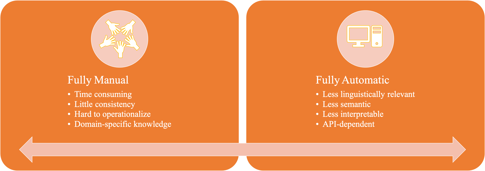

<!DOCTYPE html>


<html lang="en" >

  <head>
    <meta charset="utf-8" />
    <meta name="viewport" content="width=device-width, initial-scale=1.0" /><meta name="generator" content="Docutils 0.17.1: http://docutils.sourceforge.net/" />

    <title>NLP Pipeline &#8212; ENC2045 Computational Linguistics</title>
  
  
  
  <script data-cfasync="false">
    document.documentElement.dataset.mode = localStorage.getItem("mode") || "";
    document.documentElement.dataset.theme = localStorage.getItem("theme") || "light";
  </script>
  
  <!-- Loaded before other Sphinx assets -->
  <link href="../_static/styles/theme.css?digest=e353d410970836974a52" rel="stylesheet" />
<link href="../_static/styles/bootstrap.css?digest=e353d410970836974a52" rel="stylesheet" />
<link href="../_static/styles/pydata-sphinx-theme.css?digest=e353d410970836974a52" rel="stylesheet" />

  
  <link href="../_static/vendor/fontawesome/6.1.2/css/all.min.css?digest=e353d410970836974a52" rel="stylesheet" />
  <link rel="preload" as="font" type="font/woff2" crossorigin href="../_static/vendor/fontawesome/6.1.2/webfonts/fa-solid-900.woff2" />
<link rel="preload" as="font" type="font/woff2" crossorigin href="../_static/vendor/fontawesome/6.1.2/webfonts/fa-brands-400.woff2" />
<link rel="preload" as="font" type="font/woff2" crossorigin href="../_static/vendor/fontawesome/6.1.2/webfonts/fa-regular-400.woff2" />

    <link rel="stylesheet" type="text/css" href="../_static/pygments.css" />
    <link rel="stylesheet" href="../_static/styles/sphinx-book-theme.css?digest=14f4ca6b54d191a8c7657f6c759bf11a5fb86285" type="text/css" />
    <link rel="stylesheet" type="text/css" href="../_static/togglebutton.css" />
    <link rel="stylesheet" type="text/css" href="../_static/copybutton.css" />
    <link rel="stylesheet" type="text/css" href="../_static/mystnb.4510f1fc1dee50b3e5859aac5469c37c29e427902b24a333a5f9fcb2f0b3ac41.css" />
    <link rel="stylesheet" type="text/css" href="../_static/sphinx-thebe.css" />
    <link rel="stylesheet" type="text/css" href="../_static/mycss.css" />
    <link rel="stylesheet" type="text/css" href="../_static/design-style.4045f2051d55cab465a707391d5b2007.min.css" />
  
  <!-- Pre-loaded scripts that we'll load fully later -->
  <link rel="preload" as="script" href="../_static/scripts/bootstrap.js?digest=e353d410970836974a52" />
<link rel="preload" as="script" href="../_static/scripts/pydata-sphinx-theme.js?digest=e353d410970836974a52" />

    <script data-url_root="../" id="documentation_options" src="../_static/documentation_options.js"></script>
    <script src="../_static/jquery.js"></script>
    <script src="../_static/underscore.js"></script>
    <script src="../_static/doctools.js"></script>
    <script src="../_static/clipboard.min.js"></script>
    <script src="../_static/copybutton.js"></script>
    <script src="../_static/scripts/sphinx-book-theme.js?digest=5a5c038af52cf7bc1a1ec88eea08e6366ee68824"></script>
    <script>let toggleHintShow = 'Click to show';</script>
    <script>let toggleHintHide = 'Click to hide';</script>
    <script>let toggleOpenOnPrint = 'true';</script>
    <script src="../_static/togglebutton.js"></script>
    <script async="async" kind="hypothesis" src="https://hypothes.is/embed.js"></script>
    <script>var togglebuttonSelector = '.toggle, .admonition.dropdown';</script>
    <script src="../_static/design-tabs.js"></script>
    <script>const THEBE_JS_URL = "https://unpkg.com/thebe@0.8.2/lib/index.js"
const thebe_selector = ".thebe,.cell"
const thebe_selector_input = "pre"
const thebe_selector_output = ".output, .cell_output"
</script>
    <script async="async" src="../_static/sphinx-thebe.js"></script>
    <script>DOCUMENTATION_OPTIONS.pagename = 'nlp/nlp-pipeline';</script>
    <link rel="index" title="Index" href="../genindex.html" />
    <link rel="search" title="Search" href="../search.html" />
    <link rel="next" title="Text Preprocessing" href="text-preprocessing.html" />
    <link rel="prev" title="Natural Language Processing: A Primer" href="nlp-primer.html" />
  <meta name="viewport" content="width=device-width, initial-scale=1"/>
  <meta name="docsearch:language" content="en"/>
  </head>
  
  
  <body data-bs-spy="scroll" data-bs-target=".bd-toc-nav" data-offset="180" data-bs-root-margin="0px 0px -60%" data-default-mode="">

  
  
  <a class="skip-link" href="#main-content">Skip to main content</a>
  
  <input type="checkbox"
          class="sidebar-toggle"
          name="__primary"
          id="__primary"/>
  <label class="overlay overlay-primary" for="__primary"></label>
  
  <input type="checkbox"
          class="sidebar-toggle"
          name="__secondary"
          id="__secondary"/>
  <label class="overlay overlay-secondary" for="__secondary"></label>
  
  <div class="search-button__wrapper">
    <div class="search-button__overlay"></div>
    <div class="search-button__search-container">
<form class="bd-search d-flex align-items-center"
      action="../search.html"
      method="get">
  <i class="fa-solid fa-magnifying-glass"></i>
  <input type="search"
         class="form-control"
         name="q"
         id="search-input"
         placeholder="Search this book..."
         aria-label="Search this book..."
         autocomplete="off"
         autocorrect="off"
         autocapitalize="off"
         spellcheck="false"/>
  <span class="search-button__kbd-shortcut"><kbd class="kbd-shortcut__modifier">Ctrl</kbd>+<kbd>K</kbd></span>
</form></div>
  </div>
  
    <nav class="bd-header navbar navbar-expand-lg bd-navbar">
    </nav>
  
  <div class="bd-container">
    <div class="bd-container__inner bd-page-width">
      
      <div class="bd-sidebar-primary bd-sidebar">
        

  
  <div class="sidebar-header-items sidebar-primary__section">
    
    
    
    
  </div>
  
    <div class="sidebar-primary-items__start sidebar-primary__section">
        <div class="sidebar-primary-item">
  

<a class="navbar-brand logo" href="../intro.html">
  
  
  
  
    
    
      
    
    
    
    <script>document.write(``);</script>
  
  
</a></div>
        <div class="sidebar-primary-item"><nav class="bd-links" id="bd-docs-nav" aria-label="Main">
    <div class="bd-toc-item navbar-nav active">
        <p aria-level="2" class="caption" role="heading"><span class="caption-text">INTRODUCTION</span></p>
<ul class="current nav bd-sidenav">
<li class="toctree-l1"><a class="reference internal" href="nlp-primer.html">Natural Language Processing: A Primer</a></li>
<li class="toctree-l1 current active"><a class="current reference internal" href="#">NLP Pipeline</a></li>
</ul>
<p aria-level="2" class="caption" role="heading"><span class="caption-text">Preprocessing</span></p>
<ul class="nav bd-sidenav">
<li class="toctree-l1 has-children"><a class="reference internal" href="text-preprocessing.html">Text Preprocessing</a><input class="toctree-checkbox" id="toctree-checkbox-1" name="toctree-checkbox-1" type="checkbox"/><label class="toctree-toggle" for="toctree-checkbox-1"><i class="fa-solid fa-chevron-down"></i></label><ul>
<li class="toctree-l2"><a class="reference internal" href="text-normalization-eng.html">Text Normalization</a></li>
<li class="toctree-l2"><a class="reference internal" href="text-tokenization.html">Text Tokenization</a></li>
<li class="toctree-l2"><a class="reference internal" href="text-enrichment.html">Text Enrichment</a></li>
<li class="toctree-l2"><a class="reference internal" href="chinese-word-seg.html">Chinese Word Segmentation</a></li>
<li class="toctree-l2"><a class="reference internal" href="google-colab.html">Google Colab</a></li>
</ul>
</li>
</ul>
<p aria-level="2" class="caption" role="heading"><span class="caption-text">Text Vectorization</span></p>
<ul class="nav bd-sidenav">
<li class="toctree-l1"><a class="reference internal" href="text-vec-traditional.html">Text Vectorization Using Traditional Methods</a></li>
</ul>
<p aria-level="2" class="caption" role="heading"><span class="caption-text">Machine Learning Basics</span></p>
<ul class="nav bd-sidenav">
<li class="toctree-l1"><a class="reference internal" href="ml-overview.html">1. Machine Learning: Overview</a></li>
<li class="toctree-l1"><a class="reference internal" href="ml-simple-case.html">2. Machine Learning: A Simple Example</a></li>
<li class="toctree-l1"><a class="reference internal" href="ml-algorithm.html">3. Classification Models</a></li>
</ul>
<p aria-level="2" class="caption" role="heading"><span class="caption-text">Machine-Learning NLP</span></p>
<ul class="nav bd-sidenav">
<li class="toctree-l1"><a class="reference internal" href="ml-sklearn-classification.html">1. Sentiment Analysis Using Bag-of-Words</a></li>
<li class="toctree-l1"><a class="reference internal" href="ml-emsemble-learning.html">2. Emsemble Learning</a></li>
<li class="toctree-l1"><a class="reference internal" href="topic-modeling-naive.html">3. Topic Modeling: A Naive Example</a></li>
</ul>
<p aria-level="2" class="caption" role="heading"><span class="caption-text">Deep Learning NLP</span></p>
<ul class="nav bd-sidenav">
<li class="toctree-l1"><a class="reference internal" href="dl-neural-network-from-scratch.html">1. Neural Network From Scratch</a></li>
<li class="toctree-l1"><a class="reference internal" href="dl-simple-case.html">2. Deep Learning: A Simple Example</a></li>
<li class="toctree-l1"><a class="reference internal" href="dl-sentiment-case.html">3. Deep Learning: Sentiment Analysis</a></li>
</ul>
<p aria-level="2" class="caption" role="heading"><span class="caption-text">Neural Language Model and Embeddings</span></p>
<ul class="nav bd-sidenav">
<li class="toctree-l1"><a class="reference internal" href="dl-sequence-models-intuition.html">1. Sequence Models Intuition</a></li>
<li class="toctree-l1"><a class="reference internal" href="dl-neural-language-model-primer.html">2. Neural Language Model: A Start</a></li>
<li class="toctree-l1"><a class="reference internal" href="text-vec-embedding.html">3. Word Embeddings</a></li>
</ul>
<p aria-level="2" class="caption" role="heading"><span class="caption-text">Sequence Models, Attention, Transformers</span></p>
<ul class="nav bd-sidenav">
<li class="toctree-l1"><a class="reference internal" href="dl-attention-transformer-intuition.html">1. Attention and Transformers: Intuitions</a></li>
<li class="toctree-l1"><a class="reference internal" href="dl-seq-to-seq-attention-addition.html">2. Sequence Model with Attention for Addition Learning</a></li>
</ul>
<p aria-level="2" class="caption" role="heading"><span class="caption-text">LLM</span></p>
<ul class="nav bd-sidenav">
<li class="toctree-l1"><a class="reference internal" href="langchain-llm-intro.html">Large Language Model (Under Construction…)</a></li>
<li class="toctree-l1"><a class="reference internal" href="dl-fine-tuning-bert.html">Transfer Learning Using BERT</a></li>
</ul>
<p aria-level="2" class="caption" role="heading"><span class="caption-text">Exercises</span></p>
<ul class="nav bd-sidenav">
<li class="toctree-l1"><a class="reference internal" href="../exercise/1-python-basics.html">1. Assignment I: Python Basics</a></li>
</ul>

    </div>
</nav></div>
    </div>
  
  
  <div class="sidebar-primary-items__end sidebar-primary__section">
  </div>
  
  <div id="rtd-footer-container"></div>


      </div>
      
      <main id="main-content" class="bd-main">
        
        

<div class="sbt-scroll-pixel-helper"></div>

          <div class="bd-content">
            <div class="bd-article-container">
              
              <div class="bd-header-article">
<div class="header-article-items header-article__inner">
  
    <div class="header-article-items__start">
      
        <div class="header-article-item"><label class="sidebar-toggle primary-toggle btn btn-sm" for="__primary" title="Toggle primary sidebar" data-bs-placement="bottom" data-bs-toggle="tooltip">
  <span class="fa-solid fa-bars"></span>
</label></div>
      
    </div>
  
  
    <div class="header-article-items__end">
      
        <div class="header-article-item">

<div class="article-header-buttons">


<div class="dropdown dropdown-launch-buttons">
  <button class="btn dropdown-toggle" type="button" data-bs-toggle="dropdown" aria-expanded="false" aria-label="Launch interactive content">
    <i class="fas fa-rocket"></i>
  </button>
  <ul class="dropdown-menu">
      
      
      
      <li><a href="https://colab.research.google.com/github/alvinntnu/NTNU_ENC2045_LECTURES/blob/main/nlp/nlp-pipeline.ipynb" target="_blank"
   class="btn btn-sm dropdown-item"
   title="Launch onColab"
   data-bs-placement="left" data-bs-toggle="tooltip"
>
  

<span class="btn__icon-container">
  
    
  </span>
<span class="btn__text-container">Colab</span>
</a>
</li>
      
  </ul>
</div>


<div class="dropdown dropdown-download-buttons">
  <button class="btn dropdown-toggle" type="button" data-bs-toggle="dropdown" aria-expanded="false" aria-label="Download this page">
    <i class="fas fa-download"></i>
  </button>
  <ul class="dropdown-menu">
      
      
      
      <li><a href="../_sources/nlp/nlp-pipeline.ipynb" target="_blank"
   class="btn btn-sm btn-download-source-button dropdown-item"
   title="Download source file"
   data-bs-placement="left" data-bs-toggle="tooltip"
>
  

<span class="btn__icon-container">
  <i class="fas fa-file"></i>
  </span>
<span class="btn__text-container">.ipynb</span>
</a>
</li>
      
      
      
      
      <li>
<button onclick="window.print()"
  class="btn btn-sm btn-download-pdf-button dropdown-item"
  title="Print to PDF"
  data-bs-placement="left" data-bs-toggle="tooltip"
>
  

<span class="btn__icon-container">
  <i class="fas fa-file-pdf"></i>
  </span>
<span class="btn__text-container">.pdf</span>
</button>
</li>
      
  </ul>
</div>


<button onclick="toggleFullScreen()"
  class="btn btn-sm btn-fullscreen-button"
  title="Fullscreen mode"
  data-bs-placement="bottom" data-bs-toggle="tooltip"
>
  

<span class="btn__icon-container">
  <i class="fas fa-expand"></i>
  </span>

</button>


<script>
document.write(`
  <button class="theme-switch-button btn btn-sm btn-outline-primary navbar-btn rounded-circle" title="light/dark" aria-label="light/dark" data-bs-placement="bottom" data-bs-toggle="tooltip">
    <span class="theme-switch" data-mode="light"><i class="fa-solid fa-sun"></i></span>
    <span class="theme-switch" data-mode="dark"><i class="fa-solid fa-moon"></i></span>
    <span class="theme-switch" data-mode="auto"><i class="fa-solid fa-circle-half-stroke"></i></span>
  </button>
`);
</script>

<script>
document.write(`
  <button class="btn btn-sm navbar-btn search-button search-button__button" title="Search" aria-label="Search" data-bs-placement="bottom" data-bs-toggle="tooltip">
    <i class="fa-solid fa-magnifying-glass"></i>
  </button>
`);
</script>
<label class="sidebar-toggle secondary-toggle btn btn-sm" for="__secondary"title="Toggle secondary sidebar" data-bs-placement="bottom" data-bs-toggle="tooltip">
    <span class="fa-solid fa-list"></span>
</label>
</div></div>
      
    </div>
  
</div>
</div>
              
              

<div id="jb-print-docs-body" class="onlyprint">
    <h1>NLP Pipeline</h1>
    <!-- Table of contents -->
    <div id="print-main-content">
        <div id="jb-print-toc">
            
            <div>
                <h2> Contents </h2>
            </div>
            <nav aria-label="Page">
                <ul class="visible nav section-nav flex-column">
<li class="toc-h2 nav-item toc-entry"><a class="reference internal nav-link" href="#a-general-nlp-pipeline">A General NLP Pipeline</a><ul class="nav section-nav flex-column">
<li class="toc-h3 nav-item toc-entry"><a class="reference internal nav-link" href="#varations-of-the-nlp-pipelines">Varations of the NLP Pipelines</a></li>
</ul>
</li>
<li class="toc-h2 nav-item toc-entry"><a class="reference internal nav-link" href="#data-collection">Data Collection</a><ul class="nav section-nav flex-column">
<li class="toc-h3 nav-item toc-entry"><a class="reference internal nav-link" href="#data-acquisition-heart-of-ml-system">Data Acquisition: Heart of ML System</a></li>
<li class="toc-h3 nav-item toc-entry"><a class="reference internal nav-link" href="#less-than-ideal-scenarios">Less-than-ideal Scenarios</a></li>
<li class="toc-h3 nav-item toc-entry"><a class="reference internal nav-link" href="#data-augmentation">Data Augmentation</a></li>
</ul>
</li>
<li class="toc-h2 nav-item toc-entry"><a class="reference internal nav-link" href="#text-extraction-and-cleanup">Text Extraction and Cleanup</a><ul class="nav section-nav flex-column">
<li class="toc-h3 nav-item toc-entry"><a class="reference internal nav-link" href="#text-extraction">Text Extraction</a><ul class="nav section-nav flex-column">
<li class="toc-h4 nav-item toc-entry"><a class="reference internal nav-link" href="#extracting-texts-from-webpages">Extracting texts from webpages</a></li>
<li class="toc-h4 nav-item toc-entry"><a class="reference internal nav-link" href="#extracting-texts-from-scanned-pdf">Extracting texts from scanned PDF</a></li>
<li class="toc-h4 nav-item toc-entry"><a class="reference internal nav-link" href="#unicode-normalization">Unicode normalization</a></li>
</ul>
</li>
<li class="toc-h3 nav-item toc-entry"><a class="reference internal nav-link" href="#cleanup">Cleanup</a><ul class="nav section-nav flex-column">
<li class="toc-h4 nav-item toc-entry"><a class="reference internal nav-link" href="#segmentation-and-tokenization">Segmentation and Tokenization</a></li>
<li class="toc-h4 nav-item toc-entry"><a class="reference internal nav-link" href="#removing-stopwords-punctuations-digits">Removing stopwords, punctuations, digits</a></li>
<li class="toc-h4 nav-item toc-entry"><a class="reference internal nav-link" href="#stemming-and-lemmatization">Stemming and lemmatization</a></li>
</ul>
</li>
<li class="toc-h3 nav-item toc-entry"><a class="reference internal nav-link" href="#important-reminders-for-preprocessing">Important Reminders for Preprocessing</a></li>
</ul>
</li>
<li class="toc-h2 nav-item toc-entry"><a class="reference internal nav-link" href="#feature-engineering">Feature Engineering</a><ul class="nav section-nav flex-column">
<li class="toc-h3 nav-item toc-entry"><a class="reference internal nav-link" href="#what-is-feature-engineering">What is feature engineering?</a></li>
<li class="toc-h3 nav-item toc-entry"><a class="reference internal nav-link" href="#feature-engineering-for-classical-ml">Feature Engineering for Classical ML</a></li>
<li class="toc-h3 nav-item toc-entry"><a class="reference internal nav-link" href="#feature-engineering-for-dl">Feature Engineering for DL</a></li>
<li class="toc-h3 nav-item toc-entry"><a class="reference internal nav-link" href="#strengths-and-weakness">Strengths and Weakness</a></li>
</ul>
</li>
<li class="toc-h2 nav-item toc-entry"><a class="reference internal nav-link" href="#modeling">Modeling</a><ul class="nav section-nav flex-column">
<li class="toc-h3 nav-item toc-entry"><a class="reference internal nav-link" href="#from-simple-to-complex">From Simple to Complex</a></li>
</ul>
</li>
<li class="toc-h2 nav-item toc-entry"><a class="reference internal nav-link" href="#evaluation">Evaluation</a><ul class="nav section-nav flex-column">
<li class="toc-h3 nav-item toc-entry"><a class="reference internal nav-link" href="#why-evaluation">Why evaluation?</a></li>
<li class="toc-h3 nav-item toc-entry"><a class="reference internal nav-link" href="#intrinsic-vs-extrinsic-evaluation">Intrinsic vs. Extrinsic Evaluation</a></li>
<li class="toc-h3 nav-item toc-entry"><a class="reference internal nav-link" href="#general-principles">General Principles</a></li>
<li class="toc-h3 nav-item toc-entry"><a class="reference internal nav-link" href="#common-intrinsic-metrics">Common Intrinsic Metrics</a></li>
</ul>
</li>
<li class="toc-h2 nav-item toc-entry"><a class="reference internal nav-link" href="#post-modeling-phases">Post-Modeling Phases</a><ul class="nav section-nav flex-column">
<li class="toc-h3 nav-item toc-entry"><a class="reference internal nav-link" href="#id1">Post-Modeling Phases</a></li>
</ul>
</li>
<li class="toc-h2 nav-item toc-entry"><a class="reference internal nav-link" href="#references">References</a></li>
</ul>
            </nav>
        </div>
    </div>
</div>

              
                
<div id="searchbox"></div>
                <article class="bd-article" role="main">
                  
  <section class="tex2jax_ignore mathjax_ignore" id="nlp-pipeline">
<h1>NLP Pipeline<a class="headerlink" href="#nlp-pipeline" title="Permalink to this headline">#</a></h1>
<section id="a-general-nlp-pipeline">
<h2>A General NLP Pipeline<a class="headerlink" href="#a-general-nlp-pipeline" title="Permalink to this headline">#</a></h2>
<p></p>
<section id="varations-of-the-nlp-pipelines">
<h3>Varations of the NLP Pipelines<a class="headerlink" href="#varations-of-the-nlp-pipelines" title="Permalink to this headline">#</a></h3>
<ul class="simple">
<li><p>The process may not always be linear.</p></li>
<li><p>There are loops in between.</p></li>
<li><p>These procedures may depend on specific task at hand.</p></li>
</ul>
</section>
</section>
<section id="data-collection">
<h2>Data Collection<a class="headerlink" href="#data-collection" title="Permalink to this headline">#</a></h2>
<section id="data-acquisition-heart-of-ml-system">
<h3>Data Acquisition: Heart of ML System<a class="headerlink" href="#data-acquisition-heart-of-ml-system" title="Permalink to this headline">#</a></h3>
<ul class="simple">
<li><p>Ideal Setting: We have everything needed.</p></li>
<li><p>Labels and Annotations</p></li>
<li><p>Very often we are dealing with less-than-ideal scenarios</p></li>
</ul>
</section>
<section id="less-than-ideal-scenarios">
<h3>Less-than-ideal Scenarios<a class="headerlink" href="#less-than-ideal-scenarios" title="Permalink to this headline">#</a></h3>
<ul class="simple">
<li><p>Initial datasets with limited annotations/labels</p></li>
<li><p>Initial datasets labeled/extracted based on regular expressions or heuristics</p></li>
<li><p>Public datasets (cf. <a class="reference external" href="https://datasetsearch.research.google.com/">Google Dataset Search</a> or <a class="reference external" href="https://www.kaggle.com/">kaggle</a>)</p></li>
<li><p>Scraped data</p></li>
<li><p>Product intervention (Product intervention refers to the deliberate manipulation or curation of data by product developers or platform owners, which may introduce biases or distortions in the dataset.)</p></li>
</ul>
</section>
<section id="data-augmentation">
<h3>Data Augmentation<a class="headerlink" href="#data-augmentation" title="Permalink to this headline">#</a></h3>
<ul class="simple">
<li><p>Data augmentation in natural language processing (NLP) is a technique used to increase the diversity and quantity of training data by leveraging language properties to create new text samples that are syntactically similar to the original source text data.</p></li>
<li><p>Types of strategies:</p>
<ul>
<li><p>Synonym replacement</p></li>
<li><p>Related word replacement (based on association metrics)</p></li>
<li><p>Back translation</p></li>
<li><p>Replacing entities</p></li>
<li><p>Adding noise to data (e.g. spelling errors, random words)</p></li>
</ul>
</li>
</ul>
</section>
</section>
<section id="text-extraction-and-cleanup">
<h2>Text Extraction and Cleanup<a class="headerlink" href="#text-extraction-and-cleanup" title="Permalink to this headline">#</a></h2>
<section id="text-extraction">
<h3>Text Extraction<a class="headerlink" href="#text-extraction" title="Permalink to this headline">#</a></h3>
<ul class="simple">
<li><p>Extracting raw texts from the input data</p>
<ul>
<li><p>HTML</p></li>
<li><p>PDF</p></li>
</ul>
</li>
<li><p>Relevant vs. irrelevant information</p>
<ul>
<li><p>non-textual information</p></li>
<li><p>markup</p></li>
<li><p>metadata</p></li>
</ul>
</li>
<li><p>Encoding format</p></li>
</ul>
<section id="extracting-texts-from-webpages">
<h4>Extracting texts from webpages<a class="headerlink" href="#extracting-texts-from-webpages" title="Permalink to this headline">#</a></h4>
<p>Extracting textual contents from the website is a very common way to obtain data. It requires a close study of the structure of the HTML content of the web pages.</p>
<p>The following code attempts to extract hyperlinks from the index page of PTT, a renowned public bulletin board in Taiwan, and automatically navigates to the first hyperlink to access its textual content.</p>
<div class="cell docutils container">
<div class="cell_input docutils container">
<div class="highlight-ipython3 notranslate"><div class="highlight"><pre><span></span><span class="c1">## -------------------- ##</span>
<span class="c1">## Colab Only           ##</span>
<span class="c1">## -------------------- ##</span>

<span class="o">!</span><span class="w"> </span>pip<span class="w"> </span>install<span class="w"> </span>requests_html
<span class="o">!</span><span class="w"> </span>apt<span class="w"> </span>install<span class="w"> </span>tesseract-ocr
<span class="o">!</span><span class="w"> </span>apt<span class="w"> </span>install<span class="w"> </span>libtesseract-dev
<span class="o">!</span><span class="w"> </span>pip<span class="w"> </span>install<span class="w"> </span>pytesseract
</pre></div>
</div>
</div>
<div class="cell_output docutils container">
<div class="output stream highlight-myst-ansi notranslate"><div class="highlight"><pre><span></span>Requirement already satisfied: requests_html in /usr/local/lib/python3.10/dist-packages (0.10.0)
Requirement already satisfied: requests in /usr/local/lib/python3.10/dist-packages (from requests_html) (2.31.0)
Requirement already satisfied: pyquery in /usr/local/lib/python3.10/dist-packages (from requests_html) (2.0.0)
Requirement already satisfied: fake-useragent in /usr/local/lib/python3.10/dist-packages (from requests_html) (1.4.0)
Requirement already satisfied: parse in /usr/local/lib/python3.10/dist-packages (from requests_html) (1.20.1)
Requirement already satisfied: bs4 in /usr/local/lib/python3.10/dist-packages (from requests_html) (0.0.2)
Requirement already satisfied: w3lib in /usr/local/lib/python3.10/dist-packages (from requests_html) (2.1.2)
Requirement already satisfied: pyppeteer&gt;=0.0.14 in /usr/local/lib/python3.10/dist-packages (from requests_html) (2.0.0)
Requirement already satisfied: appdirs&lt;2.0.0,&gt;=1.4.3 in /usr/local/lib/python3.10/dist-packages (from pyppeteer&gt;=0.0.14-&gt;requests_html) (1.4.4)
Requirement already satisfied: certifi&gt;=2023 in /usr/local/lib/python3.10/dist-packages (from pyppeteer&gt;=0.0.14-&gt;requests_html) (2024.2.2)
Requirement already satisfied: importlib-metadata&gt;=1.4 in /usr/local/lib/python3.10/dist-packages (from pyppeteer&gt;=0.0.14-&gt;requests_html) (7.0.1)
Requirement already satisfied: pyee&lt;12.0.0,&gt;=11.0.0 in /usr/local/lib/python3.10/dist-packages (from pyppeteer&gt;=0.0.14-&gt;requests_html) (11.1.0)
Requirement already satisfied: tqdm&lt;5.0.0,&gt;=4.42.1 in /usr/local/lib/python3.10/dist-packages (from pyppeteer&gt;=0.0.14-&gt;requests_html) (4.66.2)
Requirement already satisfied: urllib3&lt;2.0.0,&gt;=1.25.8 in /usr/local/lib/python3.10/dist-packages (from pyppeteer&gt;=0.0.14-&gt;requests_html) (1.26.18)
Requirement already satisfied: websockets&lt;11.0,&gt;=10.0 in /usr/local/lib/python3.10/dist-packages (from pyppeteer&gt;=0.0.14-&gt;requests_html) (10.4)
Requirement already satisfied: beautifulsoup4 in /usr/local/lib/python3.10/dist-packages (from bs4-&gt;requests_html) (4.12.3)
Requirement already satisfied: lxml&gt;=2.1 in /usr/local/lib/python3.10/dist-packages (from pyquery-&gt;requests_html) (4.9.4)
Requirement already satisfied: cssselect&gt;=1.2.0 in /usr/local/lib/python3.10/dist-packages (from pyquery-&gt;requests_html) (1.2.0)
Requirement already satisfied: charset-normalizer&lt;4,&gt;=2 in /usr/local/lib/python3.10/dist-packages (from requests-&gt;requests_html) (3.3.2)
Requirement already satisfied: idna&lt;4,&gt;=2.5 in /usr/local/lib/python3.10/dist-packages (from requests-&gt;requests_html) (3.6)
Requirement already satisfied: zipp&gt;=0.5 in /usr/local/lib/python3.10/dist-packages (from importlib-metadata&gt;=1.4-&gt;pyppeteer&gt;=0.0.14-&gt;requests_html) (3.17.0)
Requirement already satisfied: typing-extensions in /usr/local/lib/python3.10/dist-packages (from pyee&lt;12.0.0,&gt;=11.0.0-&gt;pyppeteer&gt;=0.0.14-&gt;requests_html) (4.9.0)
Requirement already satisfied: soupsieve&gt;1.2 in /usr/local/lib/python3.10/dist-packages (from beautifulsoup4-&gt;bs4-&gt;requests_html) (2.5)
Reading package lists... Done
Building dependency tree... Done
Reading state information... Done
tesseract-ocr is already the newest version (4.1.1-2.1build1).
0 upgraded, 0 newly installed, 0 to remove and 35 not upgraded.
Reading package lists... Done
Building dependency tree... Done
Reading state information... Done
libtesseract-dev is already the newest version (4.1.1-2.1build1).
0 upgraded, 0 newly installed, 0 to remove and 35 not upgraded.
Collecting pytesseract
  Downloading pytesseract-0.3.10-py3-none-any.whl (14 kB)
Requirement already satisfied: packaging&gt;=21.3 in /usr/local/lib/python3.10/dist-packages (from pytesseract) (23.2)
Requirement already satisfied: Pillow&gt;=8.0.0 in /usr/local/lib/python3.10/dist-packages (from pytesseract) (9.4.0)
Installing collected packages: pytesseract
Successfully installed pytesseract-0.3.10
</pre></div>
</div>
</div>
</div>
<div class="cell docutils container">
<div class="cell_input docutils container">
<div class="highlight-ipython3 notranslate"><div class="highlight"><pre><span></span><span class="c1">## Example 1: PTT Gossipping</span>
<span class="kn">from</span> <span class="nn">requests_html</span> <span class="kn">import</span> <span class="n">HTMLSession</span>
<span class="kn">import</span> <span class="nn">requests</span>
<span class="kn">from</span> <span class="nn">bs4</span> <span class="kn">import</span> <span class="n">BeautifulSoup</span>
<span class="kn">import</span> <span class="nn">pandas</span> <span class="k">as</span> <span class="nn">pd</span>

<span class="c1">## HTML session</span>
<span class="n">session</span> <span class="o">=</span> <span class="n">HTMLSession</span><span class="p">()</span>
<span class="n">session</span><span class="o">.</span><span class="n">cookies</span><span class="o">.</span><span class="n">set</span><span class="p">(</span><span class="s1">&#39;over18&#39;</span><span class="p">,</span> <span class="s1">&#39;1&#39;</span><span class="p">)</span>  <span class="c1"># age verification</span>

<span class="c1">## Processing index page</span>
<span class="n">newsurl</span> <span class="o">=</span> <span class="s1">&#39;https://www.ptt.cc/bbs/Gossiping/index.html&#39;</span>
<span class="n">response</span> <span class="o">=</span> <span class="n">session</span><span class="o">.</span><span class="n">get</span><span class="p">(</span><span class="n">newsurl</span><span class="p">)</span>
<span class="n">web_content</span> <span class="o">=</span> <span class="n">response</span><span class="o">.</span><span class="n">text</span>

<span class="c1">## Extract all hyperlinks</span>
<span class="n">soup</span> <span class="o">=</span> <span class="n">BeautifulSoup</span><span class="p">(</span><span class="n">web_content</span><span class="p">,</span><span class="s1">&#39;html.parser&#39;</span><span class="p">)</span>
<span class="n">title</span> <span class="o">=</span> <span class="p">[</span><span class="n">x</span><span class="p">[</span><span class="s1">&#39;href&#39;</span><span class="p">]</span> <span class="k">for</span> <span class="n">x</span> <span class="ow">in</span> <span class="n">soup</span><span class="o">.</span><span class="n">select</span><span class="p">(</span><span class="s1">&#39;div.title &gt; a&#39;</span><span class="p">)]</span>
<span class="nb">print</span><span class="p">(</span><span class="n">title</span><span class="p">[:</span><span class="mi">5</span><span class="p">])</span>

<span class="c1">## Extract first article content</span>
<span class="n">first_art_link</span> <span class="o">=</span> <span class="s1">&#39;https://www.ptt.cc/&#39;</span><span class="o">+</span> <span class="n">title</span><span class="p">[</span><span class="mi">0</span><span class="p">]</span>
<span class="nb">print</span><span class="p">(</span><span class="n">first_art_link</span><span class="p">)</span>

<span class="n">response</span> <span class="o">=</span> <span class="n">session</span><span class="o">.</span><span class="n">get</span><span class="p">(</span><span class="n">first_art_link</span><span class="p">)</span>
<span class="n">web_content</span> <span class="o">=</span> <span class="n">response</span><span class="o">.</span><span class="n">text</span>

<span class="c1">## Extract article from HTML</span>
<span class="n">soup</span> <span class="o">=</span> <span class="n">BeautifulSoup</span><span class="p">(</span><span class="n">web_content</span><span class="p">,</span><span class="s1">&#39;html.parser&#39;</span><span class="p">)</span>

<span class="c1">## Article Metadata</span>
<span class="n">header</span> <span class="o">=</span> <span class="n">soup</span><span class="o">.</span><span class="n">find_all</span><span class="p">(</span><span class="s1">&#39;span&#39;</span><span class="p">,</span><span class="s1">&#39;article-meta-value&#39;</span><span class="p">)</span>

<span class="c1"># Author</span>
<span class="n">author</span> <span class="o">=</span> <span class="n">header</span><span class="p">[</span><span class="mi">0</span><span class="p">]</span><span class="o">.</span><span class="n">text</span>
<span class="c1"># Board</span>
<span class="n">board</span> <span class="o">=</span> <span class="n">header</span><span class="p">[</span><span class="mi">1</span><span class="p">]</span><span class="o">.</span><span class="n">text</span>
<span class="c1"># Title</span>
<span class="n">title</span> <span class="o">=</span> <span class="n">header</span><span class="p">[</span><span class="mi">2</span><span class="p">]</span><span class="o">.</span><span class="n">text</span>
<span class="c1"># Date</span>
<span class="n">date</span> <span class="o">=</span> <span class="n">header</span><span class="p">[</span><span class="mi">3</span><span class="p">]</span><span class="o">.</span><span class="n">text</span>


<span class="c1">## Artcle Content</span>
<span class="n">main_container</span> <span class="o">=</span> <span class="n">soup</span><span class="o">.</span><span class="n">find</span><span class="p">(</span><span class="nb">id</span><span class="o">=</span><span class="s1">&#39;main-container&#39;</span><span class="p">)</span>

<span class="c1">## Paragraphs</span>
<span class="n">all_text</span> <span class="o">=</span> <span class="n">main_container</span><span class="o">.</span><span class="n">text</span>
<span class="n">pre_text</span> <span class="o">=</span> <span class="n">all_text</span><span class="o">.</span><span class="n">split</span><span class="p">(</span><span class="s1">&#39;--&#39;</span><span class="p">)[</span><span class="mi">0</span><span class="p">]</span>
<span class="n">texts</span> <span class="o">=</span> <span class="n">pre_text</span><span class="o">.</span><span class="n">split</span><span class="p">(</span><span class="s1">&#39;</span><span class="se">\n</span><span class="s1">&#39;</span><span class="p">)</span>
<span class="n">contents</span> <span class="o">=</span> <span class="n">texts</span><span class="p">[</span><span class="mi">2</span><span class="p">:]</span>
<span class="n">content</span> <span class="o">=</span> <span class="s1">&#39;</span><span class="se">\n</span><span class="s1">&#39;</span><span class="o">.</span><span class="n">join</span><span class="p">(</span><span class="n">contents</span><span class="p">)</span>

<span class="c1"># Printing</span>
<span class="nb">print</span><span class="p">(</span><span class="s1">&#39;作者：&#39;</span><span class="o">+</span><span class="n">author</span><span class="p">)</span>
<span class="nb">print</span><span class="p">(</span><span class="s1">&#39;看板：&#39;</span><span class="o">+</span><span class="n">board</span><span class="p">)</span>
<span class="nb">print</span><span class="p">(</span><span class="s1">&#39;標題：&#39;</span><span class="o">+</span><span class="n">title</span><span class="p">)</span>
<span class="nb">print</span><span class="p">(</span><span class="s1">&#39;日期：&#39;</span><span class="o">+</span><span class="n">date</span><span class="p">)</span>
<span class="nb">print</span><span class="p">(</span><span class="s1">&#39;內容：&#39;</span><span class="o">+</span><span class="n">content</span><span class="p">)</span>
</pre></div>
</div>
</div>
<div class="cell_output docutils container">
<div class="output stream highlight-myst-ansi notranslate"><div class="highlight"><pre><span></span>[&#39;/bbs/Gossiping/M.1708555641.A.B86.html&#39;, &#39;/bbs/Gossiping/M.1708555709.A.95A.html&#39;, &#39;/bbs/Gossiping/M.1708555913.A.A76.html&#39;, &#39;/bbs/Gossiping/M.1708556060.A.DD7.html&#39;, &#39;/bbs/Gossiping/M.1708556086.A.06B.html&#39;]
https://www.ptt.cc//bbs/Gossiping/M.1708555641.A.B86.html
作者：A98454 ( 阿肥是肥宅的肥)
看板：Gossiping
標題：Re: [問卦] 科舉制度是控制人民的手段嗎？
日期：Thu Feb 22 03:47:22 2024
內容： 米那桑 空尼幾蛙 關於J個問題  阿肥覺得是這樣的

 說到控制人民就要說說 法家思想了，荀子認為任性本惡，因此人需要學習去壓制內心慾望
的邪惡，遵行禮法

 法家延續了這個思想，認為學習的成效還是不夠，人就是犯賤必須要有法來約束他們，才
會乖乖

 因此商鞅變法並提出農戰的理論，農戰理論就是說呢，國家糧食充足就能變強，所以人民
就別想有的沒的好好跟著國家給的kpi ,乖乖種田就好了

 至於那些有其他想法的，思想hen 危險的，就發配充軍思想改造，避免這些人影響農民種
田，所以人民不要想有的沒乖乖種田就好了

 然後糧食充足了，飽暖思淫慾，就有更多農奴了

 如果農奴太多土地不夠怎麽辦呢？這時候就要發動戰爭消耗多餘的人口了

 這就是農戰的核心思想

  至於科舉制度嗎，算是一種安撫懷柔政策吧，早期九品門第思想，造成平民沒有上升通道
，大概武則天開始，出現科舉制度的雛形，（也許要拉攏一些底層勢力抗衡 朝中的貴族階
級，畢竟武后的政敵很多）

  農民有了科舉制度後，也就是下階層能夠上升，國家有更多人才使用，另外下階層會跟上
階層內鬥，間接分化內部矛盾指向統治者，保護王權

 所以 科舉制度 算是 帝國2.0的新制度發明吧


 大概就是醬

 樓下  李白 怎麽看？
</pre></div>
</div>
</div>
</div>
<div class="cell tag_remove-input docutils container">
</div>
</section>
<section id="extracting-texts-from-scanned-pdf">
<h4>Extracting texts from scanned PDF<a class="headerlink" href="#extracting-texts-from-scanned-pdf" title="Permalink to this headline">#</a></h4>
<div class="admonition important">
<p class="admonition-title">Important</p>
<p><a class="reference external" href="https://tesseract-ocr.github.io/tessdoc/Installation.html">Tesseract</a> is an open source text recognition (OCR) Engine, available under the Apache 2.0 license. It can be used directly, or (for programmers) using an API to extract printed text from images. It supports a wide variety of languages.</p>
<p>You have to <strong>manually</strong> install it before you can use it in Python.</p>
</div>
<div class="cell docutils container">
<div class="cell_input docutils container">
<div class="highlight-ipython3 notranslate"><div class="highlight"><pre><span></span><span class="c1">## -------------------- ##</span>
<span class="c1">## Colab Only           ##</span>
<span class="c1">## -------------------- ##</span>

<span class="kn">from</span> <span class="nn">google.colab</span> <span class="kn">import</span> <span class="n">drive</span>
<span class="n">drive</span><span class="o">.</span><span class="n">mount</span><span class="p">(</span><span class="s1">&#39;/content/drive&#39;</span><span class="p">)</span>
</pre></div>
</div>
</div>
</div>
<div class="cell docutils container">
<div class="cell_input docutils container">
<div class="highlight-ipython3 notranslate"><div class="highlight"><pre><span></span><span class="kn">from</span> <span class="nn">PIL</span> <span class="kn">import</span> <span class="n">Image</span>
<span class="kn">from</span> <span class="nn">pytesseract</span> <span class="kn">import</span> <span class="n">image_to_string</span>

<span class="c1">#import os</span>
<span class="c1">#print(os.getcwd())</span>

<span class="n">YOUR_DEMO_DATA_PATH</span> <span class="o">=</span> <span class="s2">&quot;/content/drive/MyDrive/ENC2045_demo_data/&quot;</span>  <span class="c1"># please change your file path on local machines</span>
<span class="n">filename</span> <span class="o">=</span> <span class="n">YOUR_DEMO_DATA_PATH</span><span class="o">+</span><span class="s1">&#39;pdf-firth-text.png&#39;</span>

<span class="n">text</span> <span class="o">=</span> <span class="n">image_to_string</span><span class="p">(</span><span class="n">Image</span><span class="o">.</span><span class="n">open</span><span class="p">(</span><span class="n">filename</span><span class="p">))</span>
<span class="nb">print</span><span class="p">(</span><span class="n">text</span><span class="p">)</span>
</pre></div>
</div>
</div>
<div class="cell_output docutils container">
<div class="output stream highlight-myst-ansi notranslate"><div class="highlight"><pre><span></span>Stellenbosch Papers in Linguistics, Vol. 15, 1986, 31-60 doi: 10.5774/15-0-96

SPIL 14 (1986) 31- 6¢ 31

THE LINGUISTIC THOUGHT OF J.R. FIRTH

Nigel Love

&quot;The study of the living votce of a
man tn aectton ts a very btg job in-

ii
deed.&quot; --- J.R. Firth

John Rupert Firth was born in 1890. After serving as Pro-
fessor of English at the University of the Punjab from 1919
to 1928, he took up a pest in the phonetics department of
University College, London. In 1938 he moved to the lin-
guistics department of the School of Oriental and African
Studies in London, where from 1944 until his retirement in
1956 he was Professor of Generali Linguistics. He died in
1960. He was an influential teacher, some of whose doctrines
(especially those concerning phonology) were widely propa-~
gated and developed by his students in what came to be known

as the &quot;London school” of linguistics.

&quot;The business of linguistics&quot;, according to Firth, &quot;is to

1}

describe languages&quot;. In saying as much he would have the
assent of most twentieth-century linguistic theorists.

Where he parts company with many is in holding that this
enterprise is not incompatible with, or even separable from,
studying “the living voice of a man in action&quot;; and his
chief interest as a linguistic thinker lies in his attempt
to resist the idea that synchronic descriptive linguistics
should treat what he calis “speech-events&quot; as no more than
a means of access to what really interests the linguist:

the Language-system underlying them.

Languages, according to many theorists, are to be envisaged
as systems of abstract entities. These entities are units

of linguistic “form. Units of linguistic form are of two

</pre></div>
</div>
</div>
</div>
</section>
<section id="unicode-normalization">
<h4>Unicode normalization<a class="headerlink" href="#unicode-normalization" title="Permalink to this headline">#</a></h4>
<div class="cell docutils container">
<div class="cell_input docutils container">
<div class="highlight-ipython3 notranslate"><div class="highlight"><pre><span></span><span class="n">text</span> <span class="o">=</span> <span class="s1">&#39;I feel really 😡. GOGOGO!! 💪💪💪  🤣🤣 ȀÆĎǦƓ&#39;</span>
<span class="nb">print</span><span class="p">(</span><span class="n">text</span><span class="p">)</span>
<span class="n">text2</span> <span class="o">=</span> <span class="n">text</span><span class="o">.</span><span class="n">encode</span><span class="p">(</span><span class="s1">&#39;utf-8&#39;</span><span class="p">)</span> <span class="c1"># encode the strings in bytes</span>
<span class="nb">print</span><span class="p">(</span><span class="n">text2</span><span class="p">)</span>
</pre></div>
</div>
</div>
<div class="cell_output docutils container">
<div class="output stream highlight-myst-ansi notranslate"><div class="highlight"><pre><span></span>I feel really 😡. GOGOGO!! 💪💪💪  🤣🤣 ȀÆĎǦƓ
b&#39;I feel really \xf0\x9f\x98\xa1. GOGOGO!! \xf0\x9f\x92\xaa\xf0\x9f\x92\xaa\xf0\x9f\x92\xaa  \xf0\x9f\xa4\xa3\xf0\x9f\xa4\xa3 \xc8\x80\xc3\x86\xc4\x8e\xc7\xa6\xc6\x93&#39;
</pre></div>
</div>
</div>
</div>
<div class="cell docutils container">
<div class="cell_input docutils container">
<div class="highlight-ipython3 notranslate"><div class="highlight"><pre><span></span><span class="kn">import</span> <span class="nn">unicodedata</span>
<span class="n">unicodedata</span><span class="o">.</span><span class="n">normalize</span><span class="p">(</span><span class="s1">&#39;NFKD&#39;</span><span class="p">,</span> <span class="n">text</span><span class="p">)</span><span class="o">.</span><span class="n">encode</span><span class="p">(</span><span class="s1">&#39;ascii&#39;</span><span class="p">,</span> <span class="s1">&#39;ignore&#39;</span><span class="p">)</span><span class="o">.</span><span class="n">decode</span><span class="p">(</span><span class="s1">&#39;utf-8&#39;</span><span class="p">,</span> <span class="s1">&#39;ignore&#39;</span><span class="p">)</span>
</pre></div>
</div>
</div>
<div class="cell_output docutils container">
<div class="output text_plain highlight-myst-ansi notranslate"><div class="highlight"><pre><span></span>&#39;I feel really . GOGOGO!!    ADG&#39;
</pre></div>
</div>
</div>
</div>
<ul class="simple">
<li><p>Please check <a class="reference external" href="https://docs.python.org/3/library/unicodedata.html">unicodedata documentation</a> for more detail on character normalization.</p></li>
<li><p>Other useful libraries</p>
<ul>
<li><p>Spelling check: pyenchant, Microsoft REST API</p></li>
<li><p>PDF:  PyPDF, PDFMiner</p></li>
<li><p>OCR: pytesseract</p></li>
</ul>
</li>
</ul>
</section>
</section>
<section id="cleanup">
<h3>Cleanup<a class="headerlink" href="#cleanup" title="Permalink to this headline">#</a></h3>
<ul class="simple">
<li><p>Preliminaries</p>
<ul>
<li><p>Sentence segmentation</p></li>
<li><p>Word tokenization</p></li>
</ul>
</li>
</ul>
<section id="segmentation-and-tokenization">
<h4>Segmentation and Tokenization<a class="headerlink" href="#segmentation-and-tokenization" title="Permalink to this headline">#</a></h4>
<div class="admonition important">
<p class="admonition-title">Important</p>
<p>NLTK package provides many useful datasets for text analysis. Some of the codes may require you to download the corpus data first. Please see <a class="reference external" href="https://www.nltk.org/data.html">Installing NLTK Data</a> for more information.</p>
</div>
<div class="cell docutils container">
<div class="cell_input docutils container">
<div class="highlight-ipython3 notranslate"><div class="highlight"><pre><span></span><span class="c1">## -------------------- ##</span>
<span class="c1">## Colab Only           ##</span>
<span class="c1">## -------------------- ##</span>

<span class="kn">import</span> <span class="nn">nltk</span>
<span class="n">nltk</span><span class="o">.</span><span class="n">download</span><span class="p">([</span><span class="s1">&#39;punkt&#39;</span><span class="p">,</span> <span class="s1">&#39;stopwords&#39;</span><span class="p">,</span> <span class="s1">&#39;wordnet&#39;</span><span class="p">])</span>
</pre></div>
</div>
</div>
<div class="cell_output docutils container">
<div class="output stderr highlight-myst-ansi notranslate"><div class="highlight"><pre><span></span>[nltk_data] Downloading package punkt to /root/nltk_data...
[nltk_data]   Package punkt is already up-to-date!
[nltk_data] Downloading package stopwords to /root/nltk_data...
[nltk_data]   Package stopwords is already up-to-date!
[nltk_data] Downloading package wordnet to /root/nltk_data...
</pre></div>
</div>
<div class="output text_plain highlight-myst-ansi notranslate"><div class="highlight"><pre><span></span>True
</pre></div>
</div>
</div>
</div>
<div class="cell docutils container">
<div class="cell_input docutils container">
<div class="highlight-ipython3 notranslate"><div class="highlight"><pre><span></span><span class="kn">from</span> <span class="nn">nltk.tokenize</span> <span class="kn">import</span> <span class="n">sent_tokenize</span><span class="p">,</span> <span class="n">word_tokenize</span>

<span class="n">text</span> <span class="o">=</span> <span class="s1">&#39;&#39;&#39;</span>
<span class="s1">Python is an interpreted, high-level and general-purpose programming language. Python&#39;s design philosophy emphasizes code readability with its notable use of significant whitespace. Its language constructs and object-oriented approach aim to help programmers write clear, logical code for small and large-scale projects.</span>
<span class="s1">&#39;&#39;&#39;</span>

<span class="c1">## sent segmentation</span>
<span class="n">sents</span> <span class="o">=</span> <span class="n">sent_tokenize</span><span class="p">(</span><span class="n">text</span><span class="p">)</span>

<span class="c1">## word tokenization</span>
<span class="k">for</span> <span class="n">sent</span> <span class="ow">in</span> <span class="n">sents</span><span class="p">:</span>
    <span class="nb">print</span><span class="p">(</span><span class="n">sent</span><span class="p">)</span>
    <span class="nb">print</span><span class="p">(</span><span class="n">word_tokenize</span><span class="p">(</span><span class="n">sent</span><span class="p">))</span>
</pre></div>
</div>
</div>
<div class="cell_output docutils container">
<div class="output stream highlight-myst-ansi notranslate"><div class="highlight"><pre><span></span>Python is an interpreted, high-level and general-purpose programming language.
[&#39;Python&#39;, &#39;is&#39;, &#39;an&#39;, &#39;interpreted&#39;, &#39;,&#39;, &#39;high-level&#39;, &#39;and&#39;, &#39;general-purpose&#39;, &#39;programming&#39;, &#39;language&#39;, &#39;.&#39;]
Python&#39;s design philosophy emphasizes code readability with its notable use of significant whitespace.
[&#39;Python&#39;, &quot;&#39;s&quot;, &#39;design&#39;, &#39;philosophy&#39;, &#39;emphasizes&#39;, &#39;code&#39;, &#39;readability&#39;, &#39;with&#39;, &#39;its&#39;, &#39;notable&#39;, &#39;use&#39;, &#39;of&#39;, &#39;significant&#39;, &#39;whitespace&#39;, &#39;.&#39;]
Its language constructs and object-oriented approach aim to help programmers write clear, logical code for small and large-scale projects.
[&#39;Its&#39;, &#39;language&#39;, &#39;constructs&#39;, &#39;and&#39;, &#39;object-oriented&#39;, &#39;approach&#39;, &#39;aim&#39;, &#39;to&#39;, &#39;help&#39;, &#39;programmers&#39;, &#39;write&#39;, &#39;clear&#39;, &#39;,&#39;, &#39;logical&#39;, &#39;code&#39;, &#39;for&#39;, &#39;small&#39;, &#39;and&#39;, &#39;large-scale&#39;, &#39;projects&#39;, &#39;.&#39;]
</pre></div>
</div>
</div>
</div>
<ul class="simple">
<li><p>Frequent preprocessing</p>
<ul>
<li><p>Stopword removal</p></li>
<li><p>Stemming and/or lemmatization</p></li>
<li><p>Digits/Punctuaions removal</p></li>
<li><p>Case normalization</p></li>
</ul>
</li>
</ul>
</section>
<section id="removing-stopwords-punctuations-digits">
<h4>Removing stopwords, punctuations, digits<a class="headerlink" href="#removing-stopwords-punctuations-digits" title="Permalink to this headline">#</a></h4>
<div class="cell docutils container">
<div class="cell_input docutils container">
<div class="highlight-ipython3 notranslate"><div class="highlight"><pre><span></span><span class="kn">from</span> <span class="nn">nltk.corpus</span> <span class="kn">import</span> <span class="n">stopwords</span>
<span class="kn">from</span> <span class="nn">string</span> <span class="kn">import</span> <span class="n">punctuation</span>

<span class="n">eng_stopwords</span> <span class="o">=</span> <span class="n">stopwords</span><span class="o">.</span><span class="n">words</span><span class="p">(</span><span class="s1">&#39;english&#39;</span><span class="p">)</span>

<span class="n">text</span> <span class="o">=</span> <span class="s2">&quot;Mr. John O&#39;Neil works at Wonderland, located at 245 Goleta Avenue, CA., 74208.&quot;</span>

<span class="n">words</span> <span class="o">=</span> <span class="n">word_tokenize</span><span class="p">(</span><span class="n">text</span><span class="p">)</span>

<span class="nb">print</span><span class="p">(</span><span class="n">words</span><span class="p">)</span>

<span class="c1"># remove stopwords, punctuations, digits</span>
<span class="k">for</span> <span class="n">w</span> <span class="ow">in</span> <span class="n">words</span><span class="p">:</span>
    <span class="k">if</span> <span class="n">w</span> <span class="ow">not</span> <span class="ow">in</span> <span class="n">eng_stopwords</span> <span class="ow">and</span> <span class="n">w</span> <span class="ow">not</span> <span class="ow">in</span> <span class="n">punctuation</span> <span class="ow">and</span> <span class="ow">not</span> <span class="n">w</span><span class="o">.</span><span class="n">isdigit</span><span class="p">():</span>
        <span class="nb">print</span><span class="p">(</span><span class="n">w</span><span class="p">)</span>
</pre></div>
</div>
</div>
<div class="cell_output docutils container">
<div class="output stream highlight-myst-ansi notranslate"><div class="highlight"><pre><span></span>[&#39;Mr.&#39;, &#39;John&#39;, &quot;O&#39;Neil&quot;, &#39;works&#39;, &#39;at&#39;, &#39;Wonderland&#39;, &#39;,&#39;, &#39;located&#39;, &#39;at&#39;, &#39;245&#39;, &#39;Goleta&#39;, &#39;Avenue&#39;, &#39;,&#39;, &#39;CA.&#39;, &#39;,&#39;, &#39;74208&#39;, &#39;.&#39;]
Mr.
John
O&#39;Neil
works
Wonderland
located
Goleta
Avenue
CA.
</pre></div>
</div>
</div>
</div>
</section>
<section id="stemming-and-lemmatization">
<h4>Stemming and lemmatization<a class="headerlink" href="#stemming-and-lemmatization" title="Permalink to this headline">#</a></h4>
<div class="cell docutils container">
<div class="cell_input docutils container">
<div class="highlight-ipython3 notranslate"><div class="highlight"><pre><span></span><span class="c1">## Stemming</span>
<span class="kn">from</span> <span class="nn">nltk.stem.porter</span> <span class="kn">import</span> <span class="n">PorterStemmer</span>
<span class="n">stemmer</span> <span class="o">=</span> <span class="n">PorterStemmer</span><span class="p">()</span>

<span class="n">words</span> <span class="o">=</span> <span class="p">[</span><span class="s1">&#39;cars&#39;</span><span class="p">,</span><span class="s1">&#39;revolution&#39;</span><span class="p">,</span> <span class="s1">&#39;better&#39;</span><span class="p">]</span>
<span class="nb">print</span><span class="p">([</span><span class="n">stemmer</span><span class="o">.</span><span class="n">stem</span><span class="p">(</span><span class="n">w</span><span class="p">)</span> <span class="k">for</span> <span class="n">w</span> <span class="ow">in</span> <span class="n">words</span><span class="p">])</span>
</pre></div>
</div>
</div>
<div class="cell_output docutils container">
<div class="output stream highlight-myst-ansi notranslate"><div class="highlight"><pre><span></span>[&#39;car&#39;, &#39;revolut&#39;, &#39;better&#39;]
</pre></div>
</div>
</div>
</div>
<div class="cell docutils container">
<div class="cell_input docutils container">
<div class="highlight-ipython3 notranslate"><div class="highlight"><pre><span></span><span class="c1">## Lemmatization</span>
<span class="kn">from</span> <span class="nn">nltk.stem</span> <span class="kn">import</span> <span class="n">WordNetLemmatizer</span>
<span class="n">lemmatizer</span> <span class="o">=</span> <span class="n">WordNetLemmatizer</span><span class="p">()</span>

<span class="c1">## Wordnet requires POS of words</span>
<span class="n">poss</span> <span class="o">=</span> <span class="p">[</span><span class="s1">&#39;n&#39;</span><span class="p">,</span><span class="s1">&#39;n&#39;</span><span class="p">,</span><span class="s1">&#39;a&#39;</span><span class="p">]</span>

<span class="k">for</span> <span class="n">w</span><span class="p">,</span><span class="n">p</span> <span class="ow">in</span> <span class="nb">zip</span><span class="p">(</span><span class="n">words</span><span class="p">,</span><span class="n">poss</span><span class="p">):</span>
    <span class="nb">print</span><span class="p">(</span><span class="n">lemmatizer</span><span class="o">.</span><span class="n">lemmatize</span><span class="p">(</span><span class="n">w</span><span class="p">,</span> <span class="n">pos</span><span class="o">=</span><span class="n">p</span><span class="p">))</span>
</pre></div>
</div>
</div>
<div class="cell_output docutils container">
<div class="output stream highlight-myst-ansi notranslate"><div class="highlight"><pre><span></span>car
revolution
good
</pre></div>
</div>
</div>
</div>
<ul class="simple">
<li><p>Task-specific preprocessing</p>
<ul>
<li><p>Unicode normalization</p></li>
<li><p>Language detection</p></li>
<li><p>Code mixing</p></li>
<li><p>Transliteration (e.g., using piyin for Chinese words in English-Chinese code-switching texts)</p></li>
</ul>
</li>
</ul>
<ul class="simple">
<li><p>Automatic annotations</p>
<ul>
<li><p>POS tagging</p></li>
<li><p>Syntactic/Dependency Parsing</p></li>
<li><p>Named Entity Recognition</p></li>
<li><p>Coreference Resolution</p></li>
</ul>
</li>
</ul>
</section>
</section>
<section id="important-reminders-for-preprocessing">
<h3>Important Reminders for Preprocessing<a class="headerlink" href="#important-reminders-for-preprocessing" title="Permalink to this headline">#</a></h3>
<ul class="simple">
<li><p>Not all steps are necessary</p></li>
<li><p>These steps are NOT sequential</p></li>
<li><p>These steps are task-dependent</p></li>
<li><p>Goals</p>
<ul>
<li><p>Text Normalization</p></li>
<li><p>Text Tokenization</p></li>
<li><p>Text Enrichment/Annotation</p></li>
</ul>
</li>
</ul>
</section>
</section>
<section id="feature-engineering">
<h2>Feature Engineering<a class="headerlink" href="#feature-engineering" title="Permalink to this headline">#</a></h2>
<section id="what-is-feature-engineering">
<h3>What is feature engineering?<a class="headerlink" href="#what-is-feature-engineering" title="Permalink to this headline">#</a></h3>
<ul class="simple">
<li><p>Feature engineering is the process of transforming raw data into informative features that are suitable for machine learning algorithms.</p></li>
<li><p>It usually involves creating, selecting, or modifying features from the original dataset to improve the performance of a machine learning model.</p></li>
<li><p>Feature engineering aims to extract relevant information from the data and represent it in a way that enhances the model’s ability to learn patterns and make accurate predictions.</p></li>
<li><p>It aims at capturing the characteristics of the text into a numeric vector that can be understood by the ML algorithms. (Cf. <em>construct</em>, <em>operational definitions</em>, and <em>measurement</em> in experimental science)</p></li>
<li><p>In short, it concerns how to meaningfully represent texts quantitatively, i.e., text representation.</p></li>
</ul>
</section>
<section id="feature-engineering-for-classical-ml">
<h3>Feature Engineering for Classical ML<a class="headerlink" href="#feature-engineering-for-classical-ml" title="Permalink to this headline">#</a></h3>
<ul class="simple">
<li><p>Word-based frequency lists</p></li>
<li><p>Bag-of-words representations</p></li>
<li><p>Domain-specific word frequency lists</p></li>
<li><p>Handcrafted features based on domain-specific knowledge</p></li>
</ul>
</section>
<section id="feature-engineering-for-dl">
<h3>Feature Engineering for DL<a class="headerlink" href="#feature-engineering-for-dl" title="Permalink to this headline">#</a></h3>
<ul class="simple">
<li><p>DL directly takes the texts as inputs to the model.</p></li>
<li><p>Deep learning models, particularly deep neural networks, are capable of automatically extracting meaningful features from raw data through multiple layers of abstraction.</p></li>
<li><p>This process is known as feature learning or representation learning, and it is a key advantage of deep learning over traditional machine learning approaches.</p></li>
<li><p>However, a drawback is that deep learning models are often less interpretable compared to traditional machine learning approaches.</p></li>
</ul>
</section>
<section id="strengths-and-weakness">
<h3>Strengths and Weakness<a class="headerlink" href="#strengths-and-weakness" title="Permalink to this headline">#</a></h3>
<p></p>
<p></p>
</section>
</section>
<section id="modeling">
<h2>Modeling<a class="headerlink" href="#modeling" title="Permalink to this headline">#</a></h2>
<section id="from-simple-to-complex">
<h3>From Simple to Complex<a class="headerlink" href="#from-simple-to-complex" title="Permalink to this headline">#</a></h3>
<ul class="simple">
<li><p>Start with heuristics or rules</p></li>
<li><p>Experiment with different ML models</p>
<ul>
<li><p>From heuristics to features</p></li>
<li><p>From manual annotation to automatic extraction</p></li>
<li><p>Feature importance (weights)</p></li>
</ul>
</li>
<li><p>Find the most optimal model</p>
<ul>
<li><p>Ensemble and stacking</p></li>
<li><p>Redo feature engineering</p></li>
<li><p>Transfer learning</p></li>
<li><p>Reapply heuristics</p></li>
</ul>
</li>
</ul>
<div class="admonition note">
<p class="admonition-title">Note</p>
<ul class="simple">
<li><p>Ensemble learning combines predictions from multiple individual models directly, while stacking involves training a meta-model to combine predictions from base models.</p></li>
<li><p>Ensemble learning is typically simpler to implement but may not capture complex relationships as effectively as stacking.</p></li>
<li><p>Stacking can lead to improved performance but requires additional data for training the meta-model and is more complex to implement and tune.</p></li>
</ul>
</div>
</section>
</section>
<section id="evaluation">
<h2>Evaluation<a class="headerlink" href="#evaluation" title="Permalink to this headline">#</a></h2>
<section id="why-evaluation">
<h3>Why evaluation?<a class="headerlink" href="#why-evaluation" title="Permalink to this headline">#</a></h3>
<ul class="simple">
<li><p>We need to know how <em>good</em> the model we’ve built is – “Goodness”</p></li>
<li><p>Factors relating to the evaluation methods</p>
<ul>
<li><p>Model building</p></li>
<li><p>Deployment</p></li>
<li><p>Production</p></li>
</ul>
</li>
<li><p>ML metrics vs. Business metrics</p></li>
</ul>
</section>
<section id="intrinsic-vs-extrinsic-evaluation">
<h3>Intrinsic vs. Extrinsic Evaluation<a class="headerlink" href="#intrinsic-vs-extrinsic-evaluation" title="Permalink to this headline">#</a></h3>
<p>Intrinsic evaluation assesses the performance of a machine learning model based solely on its performance on a specific task or dataset. Extrinsic evaluation assesses the performance of a machine learning model within the context of a larger system or real-world application.</p>
<ul class="simple">
<li><p>Take spam-classification system as an example</p>
<ul>
<li><p>Intrinsic:</p>
<ul>
<li><p>the precision and recall of the spam classification/prediction</p></li>
</ul>
</li>
<li><p>Extrinsic:</p>
<ul>
<li><p>the amount of time users spent on a spam email</p></li>
</ul>
</li>
</ul>
</li>
</ul>
</section>
<section id="general-principles">
<h3>General Principles<a class="headerlink" href="#general-principles" title="Permalink to this headline">#</a></h3>
<ul class="simple">
<li><p>Do intrinsic evaluation before extrinsic.</p></li>
<li><p>Extrinsic evaluation is more expensive because it often invovles project stakeholders outside the AI team.</p></li>
<li><p>Only when we get consistently good results in intrinsic evaluation should we go for extrinsic evaluation.</p></li>
<li><p>Bad results in intrinsic often implies bad results in extrinsic as well.</p></li>
</ul>
</section>
<section id="common-intrinsic-metrics">
<h3>Common Intrinsic Metrics<a class="headerlink" href="#common-intrinsic-metrics" title="Permalink to this headline">#</a></h3>
<ul class="simple">
<li><p>Principles for Evaluation Metrics Selection</p></li>
<li><p>Data type of the labels (ground truths)</p>
<ul>
<li><p>Binary (e.g., sentiment)</p></li>
<li><p>Ordinal (e.g., informational retrieval)</p></li>
<li><p>Categorical (e.g., POS tags)</p></li>
<li><p>Textual (e.g., named entity, machine translation, text generation)</p></li>
</ul>
</li>
<li><p>Automatic vs. Human Evalation</p></li>
</ul>
</section>
</section>
<section id="post-modeling-phases">
<h2>Post-Modeling Phases<a class="headerlink" href="#post-modeling-phases" title="Permalink to this headline">#</a></h2>
<section id="id1">
<h3>Post-Modeling Phases<a class="headerlink" href="#id1" title="Permalink to this headline">#</a></h3>
<ul class="simple">
<li><p>Deployment of the model in a  production environment (e.g., web service)</p></li>
<li><p>Monitoring system performance on a regular basis</p></li>
<li><p>Updating system with new-coming data</p></li>
</ul>
</section>
</section>
<section id="references">
<h2>References<a class="headerlink" href="#references" title="Permalink to this headline">#</a></h2>
<ul class="simple">
<li><p>Chapter 2 of Practical Natural Language Processing. <span id="id2">[<a class="reference internal" href="../intro.html#id14" title="Sowmya Vajjala, Bodhisattwa Majumder, Anuj Gupta, and Harshit Surana. Practical Natural Language Processing: A Comprehensive Guide to Building Real-World NLP Systems. O'Reilly Media, 2020.">Vajjala <em>et al.</em>, 2020</a>]</span></p></li>
</ul>
</section>
</section>

    <script type="text/x-thebe-config">
    {
        requestKernel: true,
        binderOptions: {
            repo: "binder-examples/jupyter-stacks-datascience",
            ref: "master",
        },
        codeMirrorConfig: {
            theme: "abcdef",
            mode: "python"
        },
        kernelOptions: {
            name: "python3",
            path: "./nlp"
        },
        predefinedOutput: true
    }
    </script>
    <script>kernelName = 'python3'</script>

                </article>
              

              
              
                <footer class="bd-footer-article">
                  
<div class="footer-article-items footer-article__inner">
  
    <div class="footer-article-item"><!-- Previous / next buttons -->
<div class="prev-next-area">
    <a class="left-prev"
       href="nlp-primer.html"
       title="previous page">
      <i class="fa-solid fa-angle-left"></i>
      <div class="prev-next-info">
        <p class="prev-next-subtitle">previous</p>
        <p class="prev-next-title">Natural Language Processing: A Primer</p>
      </div>
    </a>
    <a class="right-next"
       href="text-preprocessing.html"
       title="next page">
      <div class="prev-next-info">
        <p class="prev-next-subtitle">next</p>
        <p class="prev-next-title">Text Preprocessing</p>
      </div>
      <i class="fa-solid fa-angle-right"></i>
    </a>
</div></div>
  
</div>

                </footer>
              
            </div>
            
            
              
                <div class="bd-sidebar-secondary bd-toc"><div class="sidebar-secondary-items sidebar-secondary__inner">

  <div class="sidebar-secondary-item">
  <div class="page-toc tocsection onthispage">
    <i class="fa-solid fa-list"></i> Contents
  </div>
  <nav class="bd-toc-nav page-toc">
    <ul class="visible nav section-nav flex-column">
<li class="toc-h2 nav-item toc-entry"><a class="reference internal nav-link" href="#a-general-nlp-pipeline">A General NLP Pipeline</a><ul class="nav section-nav flex-column">
<li class="toc-h3 nav-item toc-entry"><a class="reference internal nav-link" href="#varations-of-the-nlp-pipelines">Varations of the NLP Pipelines</a></li>
</ul>
</li>
<li class="toc-h2 nav-item toc-entry"><a class="reference internal nav-link" href="#data-collection">Data Collection</a><ul class="nav section-nav flex-column">
<li class="toc-h3 nav-item toc-entry"><a class="reference internal nav-link" href="#data-acquisition-heart-of-ml-system">Data Acquisition: Heart of ML System</a></li>
<li class="toc-h3 nav-item toc-entry"><a class="reference internal nav-link" href="#less-than-ideal-scenarios">Less-than-ideal Scenarios</a></li>
<li class="toc-h3 nav-item toc-entry"><a class="reference internal nav-link" href="#data-augmentation">Data Augmentation</a></li>
</ul>
</li>
<li class="toc-h2 nav-item toc-entry"><a class="reference internal nav-link" href="#text-extraction-and-cleanup">Text Extraction and Cleanup</a><ul class="nav section-nav flex-column">
<li class="toc-h3 nav-item toc-entry"><a class="reference internal nav-link" href="#text-extraction">Text Extraction</a><ul class="nav section-nav flex-column">
<li class="toc-h4 nav-item toc-entry"><a class="reference internal nav-link" href="#extracting-texts-from-webpages">Extracting texts from webpages</a></li>
<li class="toc-h4 nav-item toc-entry"><a class="reference internal nav-link" href="#extracting-texts-from-scanned-pdf">Extracting texts from scanned PDF</a></li>
<li class="toc-h4 nav-item toc-entry"><a class="reference internal nav-link" href="#unicode-normalization">Unicode normalization</a></li>
</ul>
</li>
<li class="toc-h3 nav-item toc-entry"><a class="reference internal nav-link" href="#cleanup">Cleanup</a><ul class="nav section-nav flex-column">
<li class="toc-h4 nav-item toc-entry"><a class="reference internal nav-link" href="#segmentation-and-tokenization">Segmentation and Tokenization</a></li>
<li class="toc-h4 nav-item toc-entry"><a class="reference internal nav-link" href="#removing-stopwords-punctuations-digits">Removing stopwords, punctuations, digits</a></li>
<li class="toc-h4 nav-item toc-entry"><a class="reference internal nav-link" href="#stemming-and-lemmatization">Stemming and lemmatization</a></li>
</ul>
</li>
<li class="toc-h3 nav-item toc-entry"><a class="reference internal nav-link" href="#important-reminders-for-preprocessing">Important Reminders for Preprocessing</a></li>
</ul>
</li>
<li class="toc-h2 nav-item toc-entry"><a class="reference internal nav-link" href="#feature-engineering">Feature Engineering</a><ul class="nav section-nav flex-column">
<li class="toc-h3 nav-item toc-entry"><a class="reference internal nav-link" href="#what-is-feature-engineering">What is feature engineering?</a></li>
<li class="toc-h3 nav-item toc-entry"><a class="reference internal nav-link" href="#feature-engineering-for-classical-ml">Feature Engineering for Classical ML</a></li>
<li class="toc-h3 nav-item toc-entry"><a class="reference internal nav-link" href="#feature-engineering-for-dl">Feature Engineering for DL</a></li>
<li class="toc-h3 nav-item toc-entry"><a class="reference internal nav-link" href="#strengths-and-weakness">Strengths and Weakness</a></li>
</ul>
</li>
<li class="toc-h2 nav-item toc-entry"><a class="reference internal nav-link" href="#modeling">Modeling</a><ul class="nav section-nav flex-column">
<li class="toc-h3 nav-item toc-entry"><a class="reference internal nav-link" href="#from-simple-to-complex">From Simple to Complex</a></li>
</ul>
</li>
<li class="toc-h2 nav-item toc-entry"><a class="reference internal nav-link" href="#evaluation">Evaluation</a><ul class="nav section-nav flex-column">
<li class="toc-h3 nav-item toc-entry"><a class="reference internal nav-link" href="#why-evaluation">Why evaluation?</a></li>
<li class="toc-h3 nav-item toc-entry"><a class="reference internal nav-link" href="#intrinsic-vs-extrinsic-evaluation">Intrinsic vs. Extrinsic Evaluation</a></li>
<li class="toc-h3 nav-item toc-entry"><a class="reference internal nav-link" href="#general-principles">General Principles</a></li>
<li class="toc-h3 nav-item toc-entry"><a class="reference internal nav-link" href="#common-intrinsic-metrics">Common Intrinsic Metrics</a></li>
</ul>
</li>
<li class="toc-h2 nav-item toc-entry"><a class="reference internal nav-link" href="#post-modeling-phases">Post-Modeling Phases</a><ul class="nav section-nav flex-column">
<li class="toc-h3 nav-item toc-entry"><a class="reference internal nav-link" href="#id1">Post-Modeling Phases</a></li>
</ul>
</li>
<li class="toc-h2 nav-item toc-entry"><a class="reference internal nav-link" href="#references">References</a></li>
</ul>
  </nav></div>

</div></div>
              
            
          </div>
          <footer class="bd-footer-content">
            
<div class="bd-footer-content__inner container">
  
  <div class="footer-item">
    
<p class="component-author">
By Alvin Cheng-Hsien Chen
</p>

  </div>
  
  <div class="footer-item">
    
  <p class="copyright">
    
      © Copyright 2023 Alvin Chen.
      <br/>
    
  </p>

  </div>
  
  <div class="footer-item">
    
  </div>
  
  <div class="footer-item">
    
  </div>
  
</div>
          </footer>
        

      </main>
    </div>
  </div>
  
  <!-- Scripts loaded after <body> so the DOM is not blocked -->
  <script src="../_static/scripts/bootstrap.js?digest=e353d410970836974a52"></script>
<script src="../_static/scripts/pydata-sphinx-theme.js?digest=e353d410970836974a52"></script>

  <footer class="bd-footer">
  </footer>
  </body>
</html>